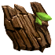
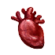

Средняя Фляга Выносливости
Предметы / Фляги и зелья
Открыть в интерактивной вики →
| Вес | 1 |
|---|---|
| Цена | 2 500 |
Описание
Бутылка содержит специальное вещество, способное улучшить снаряжение IV - VI рангов. Процесс требует дополнительного Ингибитора.
Общий вес итемов на 1хСредняя Фляга Выносливости: 76
Общий вес итемов на 1х
Средняя Фляга Выносливости: 76| Бутылка с особым веществом, способным улучшить снаряжение ранга IV–VI. Процесс дополнительно требует ингибитора. |
Рецепт
Создание: 1x  Малая Фляга Выносливости + 3x
Малая Фляга Выносливости + 3x
Малая Фляга Выносливости + 3x 
Кора Эгустахефиума + 3x
Сердце батрака + 1kГде создать

Изготовление
Изготавливает Эгустагефий в Деревне друидов за 1 000 золота после доставки ингредиентов:
|